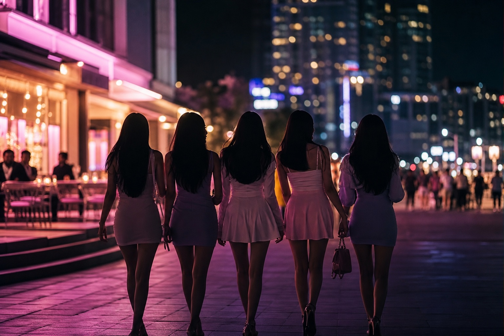

Course · Haeundae
해운대 호빠 포함 여성 일행 밤 코스 동선 — 식사부터 귀가까지
해운대에서 여성 일행이 저녁부터 밤까지 자연스럽게 이어지는 코스를 짜려면 동선이 핵심입니다. 식사 → 가벼운 1차 → 호빠 → 귀가까지 시간대별로 정리했습니다.

해운대에서 여성 일행끼리 밤을 보내려고 하면, "어디 가지?"보다 "어떤 순서로 움직이지?"가 더 어려운 질문입니다. 맛집은 찾아도 그 뒤에 뭘 하고, 몇 시에 이동하고, 마지막엔 어떻게 돌아가는지까지 하나의 흐름으로 짜는 게 핵심입니다.
이 글에서는 해운대 호빠를 포함한 여성 일행의 밤 코스를 시간대별로 정리합니다. 식사부터 귀가까지 자연스럽게 이어지는 동선을 만들면, 현장에서 "다음 어디 가?"를 고민할 일이 없어집니다.
6:30 PM — 1차 식사는 해운대역 근처가 편하다
밤 일정의 시작은 식사입니다. 해운대역 인근에는 고깃집, 횟집, 이탈리안, 일식 등 다양한 선택지가 모여 있습니다. 여성 일행이라면 분위기 좋은 레스토랑이나 오마카세, 또는 편하게 고기를 구워 먹는 곳이 무난합니다.
식사 장소를 해운대역 근처로 잡는 이유는 이후 동선 때문입니다. 해운대 해변로 일대의 바, 카페, 유흥 관련 업장들이 도보 이동 거리에 있기 때문에, 식사 후 자연스럽게 다음 장소로 이어집니다. 서면이나 남포동에서 식사하고 해운대로 이동하면 택시비와 시간이 낭비됩니다.
8:00 PM — 2차는 가벼운 칵테일바 또는 와인바
식사 후 바로 호빠에 가기보다, 가벼운 2차를 거치는 것이 자연스럽습니다. 해운대 해변로와 구남로 사이에 분위기 좋은 칵테일바, 와인바, 루프탑 바가 여러 곳 있습니다.
이 시간대에 가벼운 한 잔을 하면서 일행끼리 대화를 나누고, 분위기를 올려가는 것이 전체 코스의 리듬을 만듭니다. 너무 많이 마시지 않고 2~3잔 정도로 유지하면, 다음 장소에서도 편안하게 즐길 수 있습니다.
2차에서 1시간~1시간 30분 정도 보내면 9시 30분경이 됩니다. 이 타이밍이 호빠로 이동하기에 가장 자연스러운 시점입니다.
9:30 PM — 3차 해운대 호빠로 이동
밤 9시 30분~10시는 해운대 호빠의 분위기가 본격적으로 올라가는 시간대입니다. 너무 일찍 가면 아직 분위기가 갖춰지지 않았을 수 있고, 너무 늦으면 인기 있는 시간대의 좌석이 마감될 수 있습니다.
해운대역 인근에서 2차를 했다면 도보 또는 짧은 택시 이동으로 호빠에 도착할 수 있습니다. 사전에 예약을 잡아두면 대기 없이 바로 입장이 가능합니다.
호빠에서 편하게 즐기려면 미리 정해둘 것
호빠에 도착하기 전에 일행끼리 미리 정해두면 좋은 것이 세 가지 있습니다.
- 예산 범위 — 기본 구성만 이용할지, 추가 주류를 주문할지 미리 합의
- 체류 시간 — 1~2시간인지, 여유 있게 3시간인지 대략적 감각
- 귀가 방법 — 택시, 대리, 또는 도보 가능 거리인지 확인
이 세 가지를 미리 이야기해두면 현장에서 "더 있을까? 갈까?" 하는 어색한 타이밍이 줄어들고, 자연스럽게 다음 단계로 넘어갈 수 있습니다.
자정 전후 — 코스를 마무리하는 두 가지 방법
밤 12시 전후가 되면 코스를 마무리할 타이밍입니다. 체력과 일행의 분위기에 따라 두 가지 선택지가 있습니다.
방법 1: 깔끔하게 귀가. 숙소가 해운대역 근처라면 택시로 5~10분이면 도착합니다. 마린시티나 센텀시티 쪽이라면 택시비가 약간 더 들지만 충분히 합리적입니다. 이른 귀가를 원한다면 11시 30분경에 마무리해도 충분합니다.
방법 2: 해변 산책 후 귀가. 날씨가 좋고 일행이 여유롭다면, 호빠를 나온 뒤 해운대 해변을 걸으며 정리하는 것도 좋은 마무리입니다. 밤바다의 분위기가 하루의 마지막을 자연스럽게 닫아줍니다. 다만 너무 늦은 시간에는 택시 잡기가 어려울 수 있으므로 귀가 수단을 미리 확보해두세요.
코스를 짤 때 자주 하는 실수
1차를 너무 멀리서 잡는 것. 서면에서 식사하고 해운대로 이동하면 택시에서만 30분 이상을 소비합니다. 밤 일정의 핵심인 2차·3차에 집중하려면 1차부터 해운대 권역 안에서 잡아야 합니다.
2차를 건너뛰는 것. 식사 직후 바로 호빠에 가면 분위기 전환이 급하게 느껴질 수 있습니다. 가벼운 2차를 거치면 일행의 에너지가 자연스럽게 올라가고, 3차에서의 만족도도 높아집니다.
귀가 방법을 정하지 않는 것. 새벽 1시가 넘으면 택시 수급이 급격히 줄어듭니다. 숙소까지 도보가 불가능하다면, 호빠에 있는 동안 택시를 미리 호출하거나 카카오택시를 예약해두는 것이 안전합니다.
전체 타임라인 요약
| 시간대 | 단계 | 장소 / 활동 |
|---|---|---|
| 6:30 PM | 1차 식사 | 해운대역 인근 레스토랑·고깃집 |
| 8:00 PM | 2차 가벼운 술 | 칵테일바·와인바·루프탑 |
| 9:30 PM | 3차 호빠 | 해운대 호빠 (사전 예약) |
| 12:00 AM | 마무리 | 귀가 or 해변 산책 후 귀가 |
해운대에서 여성 일행의 밤 코스는 장소 선택보다 동선의 자연스러움이 핵심입니다. 1차 식사 → 2차 가벼운 바 → 3차 호빠 → 마무리 귀가, 이 네 단계가 도보 또는 짧은 이동으로 이어지면 하루 전체가 하나의 흐름처럼 연결됩니다. 미리 동선을 잡아두면 현장에서의 여유가 완전히 달라집니다.